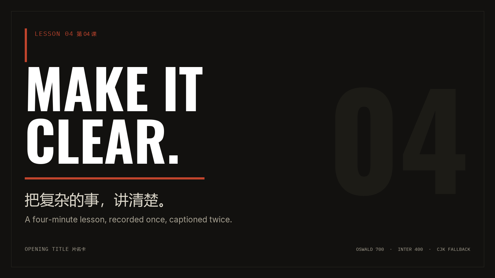
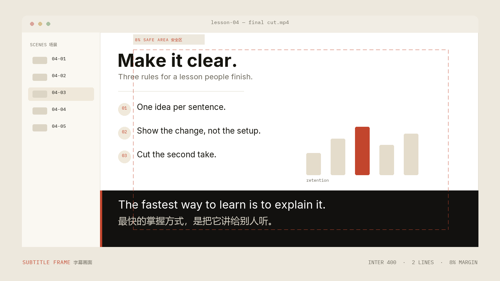
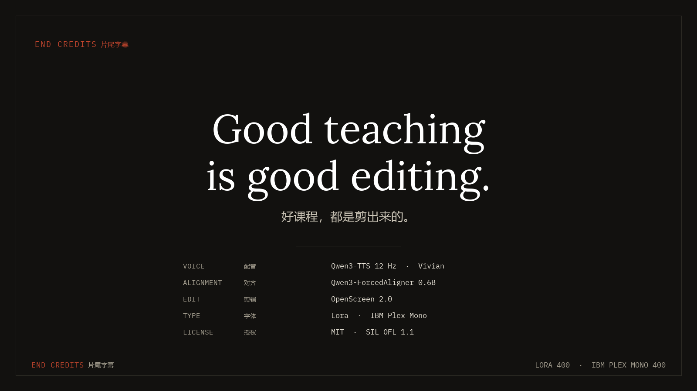
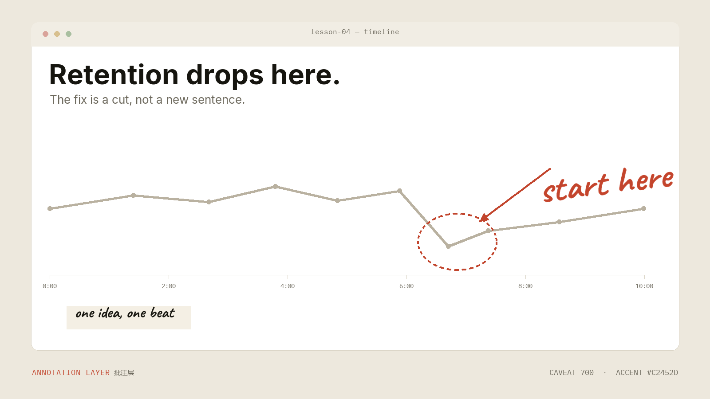

01
Script 脚本
Write for the ear: one idea per sentence, one sentence per beat. The script is the source of truth for every later stage.
为耳朵写作：一句一个意思，一句一个节拍。脚本是后续所有阶段的唯一事实来源。
MarkdownOpen-source lesson workflow 开源课程工作流
A reproducible pipeline for lesson videos: synthesize the voice, align every word, set bilingual captions, then cut in an editor that renders offline. The ten-font kit that sets the Latin side ships with it. 一套可复现的课程视频工作流：合成配音、对齐每个词、排双语字幕，再用离线渲染的剪辑器完成成片。 承载拉丁文字的五款字族、十个字体文件，随仓库一起发布。
Five families, two weights each. Everything below is measured from the files in
fonts/, not copied from a vendor page — open a family and the specimen,
coverage and downloads follow.
五款字族，每款两个字重。下面的数据全部从 fonts/ 里的字体文件实测得出，
不抄厂商页面；切换字族，样张、覆盖与下载会一起更新。
Interface and captions 界面与字幕
Every lesson deserves a clear voice.
| File 文件 | Family 字族 | Weight 字重 | Size 体积 | Glyphs 字形 | Mapped 字符 | Latin 拉丁 | CJK 中日韩 | License 授权 |
|---|
Latin is complete; Chinese is absent. The table counts every character in each block, and the explorer renders real glyphs — where a glyph is missing, the browser falls back exactly as a renderer would, and the panel says so instead of hiding it. 拉丁区是完整的，中文区是空白的。表格逐个统计区块内的字符，浏览器按真实字体渲染； 缺字时由系统字体接管——这正是成片时的行为，面板会直接说明，而不是把回退藏起来。
Four frames rendered from the shipped files by tools/render_previews.py:
an opening title, a bilingual subtitle, end credits and an annotation layer. English is
set in the kit; Chinese is set in the system face, at the size a real fallback would take.
四张画面均由 tools/render_previews.py 用仓库字体渲染：片名卡、双语字幕、
片尾字幕与批注层。英文使用自带字体，中文使用系统字体，并按真实回退后的字号排版。

Opening title 片名卡
Oswald 700 at display size; Inter carries the deck line. The ghost numeral keeps the frame from floating.
Oswald 700 排主标题，Inter 承担副标题；背景大号数字让画面不飘。

Subtitle frame 字幕画面
Two lines, one idea: English in Inter, Chinese in the system face, both inside the 8% safe area.
两行、一个意思：英文用 Inter，中文用系统字体，都在 8% 安全区内。

End credits 片尾字幕
Lora gives the closing line a voice; Plex Mono keeps the production credits aligned.
Lora 让收尾那句话有语气，Plex Mono 让制作名单对齐。

Annotation layer 批注层
Caveat marks the moment without looking like interface chrome; the arrow does the pointing.
Caveat 标出重点，却不像是界面控件；箭头负责指路。
Six stages, each with one owner. The script decides the words; the voice and the aligner decide the time; the captions and the type decide what the viewer reads. 六个阶段，各有一个明确的负责者：脚本决定说什么，配音与对齐决定什么时候说， 字幕与字体决定观众读到什么。
Write for the ear: one idea per sentence, one sentence per beat. The script is the source of truth for every later stage.
为耳朵写作：一句一个意思，一句一个节拍。脚本是后续所有阶段的唯一事实来源。
MarkdownQwen3-TTS 12 Hz with the CustomVoice speaker Vivian, verified against a cleaned reference take. No music is baked in.
Qwen3-TTS 12 Hz，CustomVoice 音色 Vivian，已用清理过的参考音验证；不预混背景音乐。
Qwen3-TTSQwen3-ForcedAligner 0.6B returns word-level timestamps. Captions inherit them instead of estimating from pauses.
Qwen3-ForcedAligner 0.6B 返回词级时间戳，字幕直接继承，而不是靠停顿位置估算。
Forced alignerBilingual SRT and ASS with an 8% safe margin, a two-line limit and a characters-per-second check before export.
双语 SRT 与 ASS，8% 安全边距、两行上限，导出前做每秒字数（CPS）校验。
SRT · ASSOpenScreen 2.0 handles zooms, annotations and GPU export. The project file stays editable after the first render.
OpenScreen 2.0 负责缩放、批注与 GPU 导出；首次渲染后工程文件仍可继续编辑。
OpenScreenFive OFL families cover titles, captions, quotes, code and callouts. Chinese falls back to the system face, measured above.
五款 OFL 字族分别承担标题、字幕、引文、代码与批注；中文回退系统字体，覆盖率见上一节。
SIL OFL 1.1Drop the fonts into any editor or renderer, or rerun the scripts that produced every number and image on this page. Nothing here needs a build step. 把字体放进任意剪辑器或渲染器，或者重跑生成这页所有数字与图片的脚本。这里没有构建步骤。
Copy the family you need. Keep the OFL text next to it when you redistribute the file.
复制需要的字族；再分发字体文件时，请把对应的 OFL 授权文本一起带上。
cp fonts/Inter-Regular.ttf fonts/Inter-Bold.ttf your-project/fonts/
cp fonts/Inter-OFL.txt your-project/fonts/Python 3.10+ with fontTools and Pillow. The report reads the TTFs; the images read the report.
需要 Python 3.10+、fontTools 与 Pillow。报告读取 TTF，图片再读取报告。
python tools/font_report.py --fonts fonts --out docs/font-report.json
python tools/render_previews.py
python tools/build_site_data.py